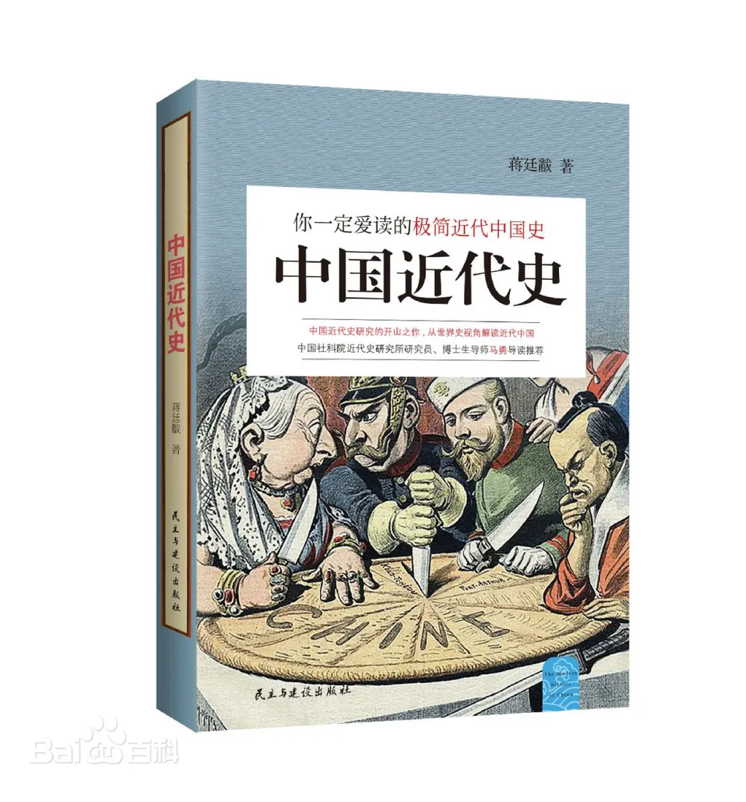
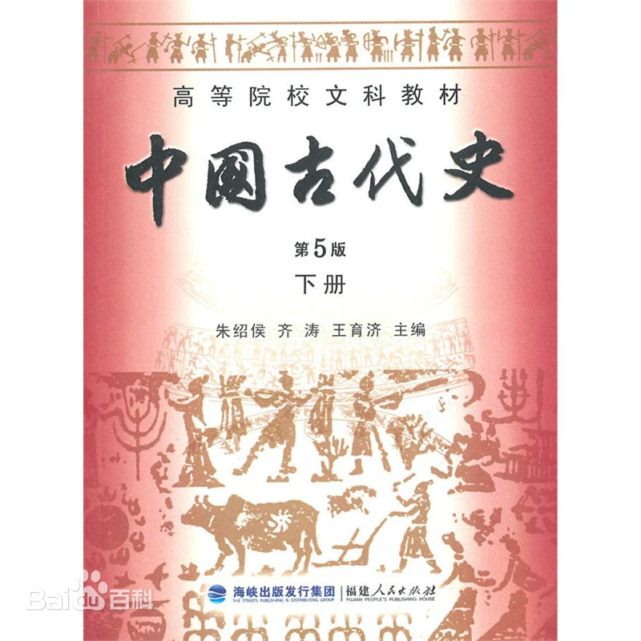
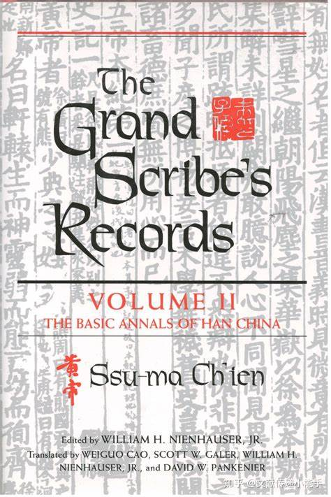

Introduce: From the first clarion call of ancient civilization, Chinese history has gone through a long and intriguing process of 5,000 years, during which there have been both prosperity and glory, as well as twists and turns and difficulties. The accumulation of past history has forged today's splendid modern civilization. This interface recommends some books about Chinese history
(Modern History of China)
Author:Jiang Tinghuang

China's modern history is a period of history from the Opium...
China's modern history is a period of history from the Opium War in 1840 to the founding of the People's Republic of China in 1949. During this period, China suffered from the invasion of foreign powers and gradually became a semi-colonial and semi-feudal society. In order to resist foreign aggression and feudal oppression, the Chinese people carried out many revolutions and reforms, including the Westernization Movement, the Reform Movement of 1898, and the Revolution of 1911. After the founding of the Communist Party of China, it led the Chinese people in the New Democratic Revolution, and eventually overthrew the rule of imperialism, feudalism and bureaucratic capitalism and established a new China. This period of history was full of twists and turns and hardships, but the Chinese people have always been indomitable and have worked hard to achieve national independence and people's liberation.
(Ancient Chinese History)
Author:Zhu Shaohou

The content of "Ancient Chinese History" can be roughly ...
The content of "Ancient Chinese History" can be roughly summarized into the following aspects:
Prehistoric period: introduces the origin and evolution of human beings, as well as the production methods and social organizations of primitive society.
Slave society: mainly describes the politics, economy, and culture of the Xia, Shang, and Zhou dynasties, including social systems such as the feudal system, the well-field system, and the patriarchal system, as well as the emergence and development of characters such as oracle bone inscriptions and bronze inscriptions.
Feudal society: covers the Spring and Autumn Period and the Warring States Period, the Qin and Han Dynasties, the Three Kingdoms, the Jin Dynasty, the Southern and Northern Dynasties, the Sui and Tang Dynasties, the Five Dynasties and Ten Kingdoms, the Song, Yuan, Ming, and Qing Dynasties, involving the replacement of dynasties, the evolution of political systems, the development of social economy, and the prosperity of culture.
In summary, "Ancient Chinese History" comprehensively displays the development process of politics, economy, and culture in ancient Chinese society.
(Historical records)
Author:Sima Qian

Introduce:
The without doubt that the Historical records is the number one history book of China...
The without doubt that the Historical records is the number one history book of China."Historical Records", the earliest known as "Taishi Gongshu" or "Taishi Gongji", is a chronicle of the history of Sima Qian (Taishi Gong), who served as Taishi Ling during the period of Emperor Wu of the Western Han Dynasty, recorded from legendsThe 2,500-year history of China from the Yellow Emperor to the early years of Emperor Wu of the Han Dynasty is collectively known as the "First Four History" together with the later "Book of Han", "Book of the Later Han" and "Chronicles of the Three Kingdoms". [cf. 1] The book includes 12 volumes of the Honki, 30 volumes of the family, 70 volumes of the biography, 10 volumes of the table, and 8 volumes, with a total of 130 volumes and more than 526,500 characters. The original manuscript of the book was lost at the end of the Western Han Dynasty, and the oldest surviving fragment of historical records is the manuscript of the Six Dynasties of China in the collection of Kozanji Temple in Kyoto, Japan; The oldest surviving complete historical record is the Northern Song Dynasty "Jing Yu Ben" "Historical Records Collection" (15 volumes of which are supplemented by other editions) and the Japanese Tibetan and Southern Song Dynasty version of Huang Shanfu's "Commentary" in the Institute of History and Linguistics of the Academia Sinica in TaiwanHistorical Records of the Three Families Note.